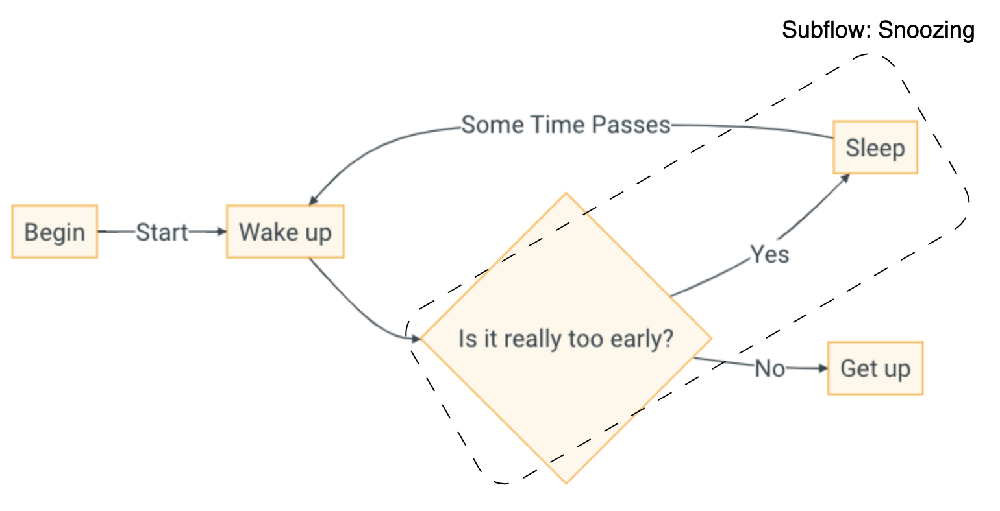

Flowchart to HTML
Problem Description
In this example, we will look at converting flowchart elements into HTML elements. The problem is open-ended, meaning, there is no one solution but rather the project will contain many small examples that showcase a multitude of operations for each documented MTL. The flowchart which should be used as the source model of the project is depicted in the diagram below:
graph LR
A[Begin] -->|Start| B[Wake up];
B --> C{Is it really too early?};
C --> |Yes| D[Sleep];
C --> |No| E[Get up]
D --> |Some Time Passes| B;Here is how the different models in this project depend on each other:
graph BT
B[Source Model] -->|conforms to| A[Flowchart Metamodel];
C[MT Execution Engine] -->|reads| B;
C -->|executes| D[MT Definition];
C -->|writes| E[Target Model];
D -->|uses| A;
E -->|conforms to| F[HTML Metamodel];
D -->|uses| F;Now, let's see how the models are defined.
Source Metamodel
The source metamodel is defined using Emfatic (.emf), which can be converted into an ECore file. You can then access the flowchart classes as EPackages (ECore has EClasses which are referenced as EPackage in Groovy) to be used within the MT definition.
@namespace(uri="flowchart", prefix="flowchart")
package flowchart;
abstract class NamedElement {
attr String name;
}
class Flowchart extends NamedElement {
val Node[*] nodes;
val Transition[*] transitions;
}
abstract class Node extends NamedElement {
ref Transition[*]#source outgoing;
ref Transition[*]#target incoming;
}
class Transition extends NamedElement {
ref Node#outgoing source;
ref Node#incoming target;
}
class Action extends Node {
}
class Decision extends Node {
}
class Subflow extends Flowchart, Node {
}
Target Metamodel
Just like before, the target metamodel is also defined using Emfatic. The metamodel script is long because all HTML elements must be defined so that the transformation generates a valid HTML document.
package HTML;
class HTML {
!ordered val HEAD#html head;
!ordered val BODY#html body;
}
class HTMLElement {
!unique !ordered attr EString value;
!ordered val HTMLElement[*] children;
}
class HEAD extends HTMLElement {
!ordered val HEADElement[*]#head headElements;
!ordered ref HTML#head html;
}
abstract class HEADElement extends HTMLElement {
!ordered ref HEAD#headElements head;
}
class LINK extends HEADElement {
!unique !ordered attr EString rel;
!unique !ordered attr EString title;
!unique !ordered attr EString ahref;
!unique !ordered attr EString type;
}
class TITLE extends HEADElement {
}
class BODY extends HTMLElement {
!unique !ordered attr EString background;
!unique !ordered attr EString bgcolor;
!unique !ordered attr EString text;
!unique !ordered attr EString link;
!unique !ordered attr EString alink;
!unique !ordered attr EString vlink;
!ordered val BODYElement[*] bodyElements;
!ordered ref HTML#body html;
}
abstract class BODYElement extends HTMLElement {
}
class H1 extends BODYElement {
}
class H2 extends BODYElement {
}
class H3 extends BODYElement {
}
class H4 extends BODYElement {
}
class EM extends BODYElement {
}
class STRONG extends BODYElement {
}
class B extends BODYElement {
}
class I extends BODYElement {
}
class TT extends BODYElement {
}
class PRE extends BODYElement {
}
class BIG extends BODYElement {
}
class SMALL extends BODYElement {
}
class SUB extends BODYElement {
}
class SUP extends BODYElement {
}
class STRIKE extends BODYElement {
}
class FONT extends BODYElement {
!unique !ordered attr EString color;
!unique !ordered attr EString face;
!unique !ordered attr EString size;
}
class IMG extends BODYElement {
!unique !ordered attr EString src;
!unique !ordered attr EString width;
!unique !ordered attr EString height;
!unique !ordered attr EString alt;
!unique !ordered attr EString align;
!unique !ordered attr EString vspace;
!unique !ordered attr EString hspace;
!unique !ordered attr EString ismap;
!unique !ordered attr EString usemap;
!unique !ordered attr EString border;
}
class BR extends BODYElement {
!unique !ordered attr EString clear;
}
class MAP extends BODYElement {
}
class AREA extends BODYElement {
!unique !ordered attr EString shape;
!unique !ordered attr EString coords;
!unique !ordered attr EString ahref;
}
class STYLE extends BODYElement {
}
class EMBED extends BODYElement {
!unique !ordered attr EString src;
!unique !ordered attr EString width;
!unique !ordered attr EString height;
!unique !ordered attr EString align;
!unique !ordered attr EString vspace;
!unique !ordered attr EString hspace;
!unique !ordered attr EString border;
}
class NOEMBED extends BODYElement {
}
class SPAN extends BODYElement {
!unique !ordered attr EString style;
}
class A extends BODYElement {
!unique !ordered attr EString ahref;
!unique !ordered attr EString name;
!unique !ordered attr EString ~id;
}
class DIV extends BODYElement {
!unique !ordered attr EString align;
}
class P extends BODYElement {
}
abstract class TABLEElement extends BODYElement {
!unique !ordered attr EString bgcolor;
!unique !ordered attr EString background;
}
class TABLE extends TABLEElement {
!unique !ordered attr EString border;
!unique !ordered attr EString width;
!unique !ordered attr EString cellspacing;
!unique !ordered attr EString cellpadding;
!ordered val TR[*]#table trs;
}
class TR extends TABLEElement {
!unique !ordered attr EString valign;
!unique !ordered attr EString align;
!ordered ref TABLE#trs table;
!ordered val TD[*]#tr tds;
}
class TD extends TABLEElement {
!unique !ordered attr EString colspan;
!unique !ordered attr EString rowspan;
!unique !ordered attr EString valign;
!unique !ordered attr EString align;
!unique !ordered attr EString width;
!ordered ref TR#tds tr;
}
class TH extends TD {
}
class FORM {
!unique !ordered attr EString action;
!unique !ordered attr EString method;
}
class INPUT {
!unique !ordered attr EString align;
!unique !ordered attr EString maxlength;
!unique !ordered attr EString size;
!unique !ordered attr EString checked;
!unique !ordered attr EString src;
!unique !ordered attr EString inputValue;
!unique !ordered attr EString name;
!unique !ordered attr EString type;
}
class TEXTAREA {
!unique !ordered attr EString name;
!unique !ordered attr EString rows;
!unique !ordered attr EString cols;
}
class SELECT {
!unique !ordered attr EString multiple;
!unique !ordered attr EString size;
!unique !ordered attr EString name;
}
class OPTION {
!unique !ordered attr EString selected;
!unique !ordered attr EString optionValue;
}
abstract class ListElement {
!unique !ordered attr EString type;
}
class OL extends ListElement {
!unique !ordered attr EString start;
}
class UL extends ListElement {
}
class LI extends ListElement {
!unique !ordered attr EString liValue;
}
class DL {
}
class DT {
}
class DD {
}
class APPLET {
!unique !ordered attr EString applet;
!unique !ordered attr EString ~class;
!unique !ordered attr EString src;
!unique !ordered attr EString align;
!unique !ordered attr EString width;
!unique !ordered attr EString height;
}
class PARAM {
!unique !ordered attr EString name;
!unique !ordered attr EString paramValue;
}
class OBJECT {
!unique !ordered attr EString classid;
!unique !ordered attr EString ~id;
!unique !ordered attr EString data;
!unique !ordered attr EString type;
!unique !ordered attr EString standby;
}
class FRAMESET {
!unique !ordered attr EString rows;
!unique !ordered attr EString cols;
!unique !ordered attr EString framespacing;
!unique !ordered attr EString frameborder;
!unique !ordered attr EString border;
}
class FRAME {
!unique !ordered attr EString src;
!unique !ordered attr EString name;
!unique !ordered attr EString marginwidth;
!unique !ordered attr EString marginheight;
!unique !ordered attr EString scrolling;
!unique !ordered attr EString noresize;
}
class NOFRAME {
}
class IFRAME extends FRAME {
}
// Based on https://github.com/SATToSE/SoTeSoLa2012/blob/master/hackathon/modisco-eclipse/org.eclipse.gmt.modisco.tool.metricsvisualizationbuilder/Metamodels/HTML.ecore
Source Model
Wakeup Flowchart
Let's turn that flowchart into an XMI representation because that is the required format for source models in YAMTL (note that this is equivalent to the Flexmi code shown on the previous page):
<?xml version="1.0" encoding="UTF-8"?>
<flowchart:Flowchart xmi:version="2.0" xmlns:xmi="http://www.omg.org/XMI" xmlns:xsi="http://www.w3.org/2001/XMLSchema-instance" xmlns:flowchart="flowchart" xmi:id="_9mLMwDY6EeOwt8pm-kjW_Q" name="Wakeup">
<nodes xsi:type="flowchart:Action" xmi:id="_9mLMwTY6EeOwt8pm-kjW_Q" name="Wake up" outgoing="_9mLMxjY6EeOwt8pm-kjW_Q" incoming="_9mLMyDY6EeOwt8pm-kjW_Q _9mLz0TY6EeOwt8pm-kjW_Q"/>
<nodes xsi:type="flowchart:Decision" xmi:id="_9mLMwjY6EeOwt8pm-kjW_Q" name="Is it really too early?" outgoing="_9mLMxzY6EeOwt8pm-kjW_Q _9mLz0DY6EeOwt8pm-kjW_Q" incoming="_9mLMxjY6EeOwt8pm-kjW_Q"/>
<nodes xsi:type="flowchart:Action" xmi:id="_9mLMwzY6EeOwt8pm-kjW_Q" name="Sleep" outgoing="_9mLMyDY6EeOwt8pm-kjW_Q" incoming="_9mLMxzY6EeOwt8pm-kjW_Q"/>
<nodes xsi:type="flowchart:Action" xmi:id="_9mLMxDY6EeOwt8pm-kjW_Q" name="Get up" incoming="_9mLz0DY6EeOwt8pm-kjW_Q"/>
<nodes xsi:type="flowchart:Action" xmi:id="_9mLMxTY6EeOwt8pm-kjW_Q" name="begin" outgoing="_9mLz0TY6EeOwt8pm-kjW_Q"/>
<transitions xmi:id="_9mLMxjY6EeOwt8pm-kjW_Q" name="" source="_9mLMwTY6EeOwt8pm-kjW_Q" target="_9mLMwjY6EeOwt8pm-kjW_Q"/>
<transitions xmi:id="_9mLMxzY6EeOwt8pm-kjW_Q" name="Yes" source="_9mLMwjY6EeOwt8pm-kjW_Q" target="_9mLMwzY6EeOwt8pm-kjW_Q"/>
<transitions xmi:id="_9mLMyDY6EeOwt8pm-kjW_Q" name="Some Time Passes" source="_9mLMwzY6EeOwt8pm-kjW_Q" target="_9mLMwTY6EeOwt8pm-kjW_Q"/>
<transitions xmi:id="_9mLz0DY6EeOwt8pm-kjW_Q" name="No" source="_9mLMwjY6EeOwt8pm-kjW_Q" target="_9mLMxDY6EeOwt8pm-kjW_Q"/>
<transitions xmi:id="_9mLz0TY6EeOwt8pm-kjW_Q" name="start" source="_9mLMxTY6EeOwt8pm-kjW_Q" target="_9mLMwTY6EeOwt8pm-kjW_Q"/>
</flowchart:Flowchart>
Wakeup Flowchart with Subflow
Some MTL examples also transform the Flowchart's subflow elements, so, another flowchart (that contains subflow) based on the original flowchart is also defined. The flowchart model with subflow is as follows:
Graphical Representation

Abstract Syntax in XMI
<?xml version="1.0" encoding="UTF-8"?>
<flowchart:Flowchart xmi:version="2.0" xmlns:xmi="http://www.omg.org/XMI" xmlns:xsi="http://www.w3.org/2001/XMLSchema-instance" xmlns:flowchart="flowchart" xmi:id="_9mLMwDY6EeOwt8pm-kjW_Q" name="Wakeup">
<nodes xsi:type="flowchart:Action" xmi:id="_9mLMwTY6EeOwt8pm-kjW_Q" name="Wake up" outgoing="_9mLMxjY6EeOwt8pm-kjW_Q" incoming="_9mLMyDY6EeOwt8pm-kjW_Q _9mLz0TY6EeOwt8pm-kjW_Q"/>
<nodes xsi:type="flowchart:Action" xmi:id="_9mLMxDY6EeOwt8pm-kjW_Q" name="Get up" incoming="_9mLz0DY6EeOwt8pm-kjW_Q"/>
<nodes xsi:type="flowchart:Action" xmi:id="_9mLMxTY6EeOwt8pm-kjW_Q" name="begin" outgoing="_9mLz0TY6EeOwt8pm-kjW_Q"/>
<nodes xsi:type="flowchart:Subflow" xmi:id="_BYIhADZzEeOvH6AlutIRRw" name="Snoozing">
<nodes xsi:type="flowchart:Action" xmi:id="_9mLMwzY6EeOwt8pm-kjW_Q" name="Sleep" outgoing="_9mLMyDY6EeOwt8pm-kjW_Q" incoming="_9mLMxzY6EeOwt8pm-kjW_Q"/>
<nodes xsi:type="flowchart:Decision" xmi:id="_9mLMwjY6EeOwt8pm-kjW_Q" name="Is it really too early?" outgoing="_9mLMxzY6EeOwt8pm-kjW_Q _9mLz0DY6EeOwt8pm-kjW_Q" incoming="_9mLMxjY6EeOwt8pm-kjW_Q"/>
<transitions xmi:id="_9mLMxzY6EeOwt8pm-kjW_Q" name="Yes" source="_9mLMwjY6EeOwt8pm-kjW_Q" target="_9mLMwzY6EeOwt8pm-kjW_Q"/>
</nodes>
<transitions xmi:id="_9mLMxjY6EeOwt8pm-kjW_Q" name="" source="_9mLMwTY6EeOwt8pm-kjW_Q" target="_9mLMwjY6EeOwt8pm-kjW_Q"/>
<transitions xmi:id="_9mLMyDY6EeOwt8pm-kjW_Q" name="Some Time Passes" source="_9mLMwzY6EeOwt8pm-kjW_Q" target="_9mLMwTY6EeOwt8pm-kjW_Q"/>
<transitions xmi:id="_9mLz0DY6EeOwt8pm-kjW_Q" name="No" source="_9mLMwjY6EeOwt8pm-kjW_Q" target="_9mLMxDY6EeOwt8pm-kjW_Q"/>
<transitions xmi:id="_9mLz0TY6EeOwt8pm-kjW_Q" name="start" source="_9mLMxTY6EeOwt8pm-kjW_Q" target="_9mLMwTY6EeOwt8pm-kjW_Q"/>
</flowchart:Flowchart>
Target Model
Since the problem is open-ended there is no one solution i.e. no final target model to achieve. Check out the MTL Solutions below to see the advanced functionalities (special operations and concepts) of each MTL.
Flowchart to HTML - YAMTL Implementation
In this tutorial, the core concepts of YAMTL transformations will be described. To do this, elements of a flowchart model will be transformed using special operations into valid HTML elements.
graph LR
A[Begin] -->|Start| B[Wake up];
B --> C{Is it really too early?};
C --> |Yes| D[Sleep];
C --> |No| E[Get up]
D --> |Some Time Passes| B;The flowchart model (abstract representation shown in the figure above) has different types of elements: Node, Action, Decision, Transition, and Subflow.
Node elements are the most basic elements in a flowchart. They can have any number of incoming and outgoing transitions.
Action elements are a type of Node element. They have a value describing an action and such elements can also have any number of incoming and outgoing transitions.
Decision elements are another type of Node element. Its value indicates a decision (if-else condition) and a decision element can have any number of incoming and outgoing transitions.
Transition elements are those arrows (direction flow) in the flowchart figure above. They have a name attribute. A transition element must have one source Node (start of the arrow) and one target Node (end of the arrow).
Subflow is a special Node element that contains a flowchart inside a flowchart (making it a sub-section). A subflow element has a name and all the features of a flowchart i.e. can have any number of nodes and transitions.
Basic Example
This is a simple example that converts all flowchart elements into HTML H1 headings:
ruleStore([
rule('Flowchart2Heading')
.in("f", flowchartPk.Flowchart)
.out("h1", htmlPk.H1, {
h1.value = f.name
}),
rule('Action2Heading')
.in("a", flowchartPk.Action)
.out("h1", htmlPk.H1, {
h1.value = a.name
}),
rule('Decision2Heading')
.in("d", flowchartPk.Decision)
.out("h1", htmlPk.H1, {
h1.value = d.name
}),
rule('Transition2Heading')
.in("t", flowchartPk.Transition)
.out("h1", htmlPk.H1, {
h1.value = t.name
})
])
In this code snippet, 4 rules transform different flowchart objects: Flowchart, Action, Decision, and Transition; into H1 elements. Each rule has a name (within rule('<ruleName>') clause), an input element (with a name and type), and an output element (with a name, type and a lamda expression). The lambda expression of all rules follow the same format: assign the name of the input object to the value of the heading H1.
Rule Inheritance
First, an abstract rule is defined with a set of input and output elements. Then, a child rule is declared which inherits from the abstract rule (parent) and performs the transformation. YAMTL also supports multiple rule inheritance where a child rule can inherit from multiple parent rules.
ruleStore([
// This parent rule is abstract, so it will not be applied directly
// but it can be executed by its children
rule('Flowchart2H1')
.isAbstract()
.in("e", flowchartPk.Flowchart)
.out("h1", htmlPk.H1, {
h1.value = "Flowchart " + e.name
}),
// This child rule inherits from the previous one
rule('Subflow2H1')
.inheritsFrom(['Flowchart2H1'])
.in("e", flowchartPk.Subflow)
.out("h1", htmlPk.H1, {
// R.H.S. h1.value is inherited from the parent rule
// 'e' object is passed to the parent rule to calculate h1.value
h1.value = "Subflow " + h1.value
})
])
isAbstract() clause is used to define an abstract rule. The abstract rule contains an input element of type Flowchart and an output element of H1 heading. The output object's value is updated to the input object's name with a prefix "Flowchart". A new child rule that inherits from the abstract rule using the inheritsFrom(['<ruleNameList>']) clause. The child rule Subflow2H1 has an input element of type Subflow which extends Flowchart. Its name is e just like in the parent rule, meaning when the child rule is executed the input object e overrides the object e in the parent rule. The output element's type must be the same as the parent rule. The output object's value is "Subflow " followed by the value of h1 in the abstract rule because both rules are executed and the output objects are calculated. Thus, the final output is an H1 element of the following format:
Rule Override
There may be cases where you need to override the output object of the parent rule. This means that when the rule that inherits is executed, the value of the output object in the parent rule is overridden by the value of the output object calculated in the child rule. This also means that the child output object has no value at the start of execution unlike when it is inherited with no override.
ruleStore([
rule('Flowchart2H1')
.in("e", flowchartPk.Flowchart)
.out("h1", htmlPk.H1, {
//Assigns the name of the flowchart to the value of the h1 element
h1.value = "Flowchart " + e.name
}),
rule('Subflow2H1')
.inheritsFrom(['Flowchart2H1'])
.in("e", flowchartPk.Subflow)
.out("h1", htmlPk.H1, {
//If h1 value is inherited then it is not null, else it is null
if(h1.value !== null) {
//R.H.S h1.value is already calculated and inherited
h1.value = "Subflow " + h1.value
} else {
//h1 is newly initialised since rule is overridden
h1.value = "Subflow " + e.name //Overridden output object
}
//Override the parent rule so the child rule's h1 object is used
}).overriding()
//Try out the above transformation without the overriding() method
//and see the difference in inheritance behaviour
])
To better understand the properties of the overriding() clause, you should see the difference in execution and output, when you use override and when you do not.
When you use overrding():
The rule that inherits (Subflow2H1), overrides the parent rule's (Flowchart2H1) output object h1 meaning its value is newly initialized (null), thus, the else-condition is invoked. The local input object e is referenced within the output block and its name (e.name) is retrieved to be assigned as part of a string to the value of h1. The output of this transformation would look like this:
When you do not use overriding():
When the child rule is executed, the output element(s) of the parent rule is calculated first. This means that h1 output object has a computed value in the parent rule. When you access the h1 output object in the child rule, it references to the parent rule's h1 output object (which contains a value). Thus, the if-condition is satisfied and the child rule's output object h1 is assigned the value of a string and the value of h1 object calculated within the parent rule. The main output of this transformation would be:
Lazy Rules
A lazy rule is a rule that is executed after all non-lazy rules. When multiple lazy rules are defined, then the lazy rules are invoked in sequential order.
ruleStore([
rule('Flowchart2Heading')
.in('f', flowchartPk.Flowchart)
.out('div', htmlPk.DIV, {
// without LAZY: div.children.addAll(fetch(f.nodes))
// with LAZY rules
div.children.addAll(fetch(f.nodes, 'out', 'NodeRule'))
}),
rule('NodeRule')
.isUniqueLazy()
.in("in", flowchartPk.Node)
.out("out", htmlPk.H1, {
out.value = in.name
}),
rule('Transition2H1')
.in("t", flowchartPk.Transition)
.out("h1", flowchartPk.H1, {
h1.value = t.name
})
])
A lazy rule is called and not scheduled by the YAMTL engine, which may lead to different results each time the rule is executed. A uniqueLazy rule always outputs the same result no matter how many times it is invoked and executed. In the code snippet above, Flowchart2Heading rule adds some nodes to a div HTML block. The div adds children from another rule using a special fetch operation: fetch(inputMatchedObject, outVarName, ruleName), where inputMatchedObject can be just a single value or a collection; outVarName is the name of the output object of the other rule which is being accessed; ruleName is the name of that other rule. In this example, inputMatchedObject is f.nodes which is a collection of Node objects found in the output object of the matched NodeRule. Since NodeRule has not been executed, the values of div are not populated just yet. Next, NodeRule is tagged as uniqueLazy so it is not executed and is skipped for now. Transition2H1 rule transforms all Transition elements into H1 headings, where the value of an H1 element is the the name of the Transition passed to the input pattern. Now all non-lazy rules have been invoked so the uniqueLazy rule (NodeRule) can be executed next. All Node objects are transformed into H1 HTML elements, where each H1 output object's value is the name of the Node object it has been transformed from. This rule generates a collection of H1 headings which can finally be passed to the special fetch operation of Flowchart2Heading rule. Thus, the div output object contains a collection of H1 elements with names of Node objects as their values.
Transient Rules
Transient rules are rules whose output is not persisted in the target model. They are used to perform calculations and update objects in the target model. The transient clause is used to define a transient rule.
// an attribute shared among rules
def count = 0
ruleStore([
rule('Transitions2Div')
.isTransient()
.in("t", flowchartPk.Transition)
.out("div", htmlPk.DIV, {
count++
println(count)
}),
rule('FlowChart')
.in("f", flowchartPk.Flowchart)
.out("h1", htmlPk.H1, {
h1.value = "The ${f.name} flowchart has ${count} transitions"
.toString()
})
])
])
In the above example, the Transitions2Div rule is declared as transient. The out block is used to update the count variable with the number of children in the div output object, which happens automatically due to the number of transition elements (inputs) that match the rule. The FlowChart rule is not transient and it has an input object of type Flowchart and an output object of type H1. The value of the H1 output object is a string that contains the name of the flowchart and the value of the count variable.
Rule Filtering
In this example, a filter condition (which is a lambda expression) is applied to a rule to transform selected input objects.
ruleStore([
rule('SelectedTransitions2Text')
.in("t", flowchartPk.Transition)
.filter{
//Filter input objects that satify this condition
t.source.name == "Is it really too early?"
}
.out("p", htmlPk.P, {
p.value = t.name
})
])
The rule SelectedTransitions2Text has an input element as a Transition object. A filter condition is applied to check the name of the transition's source. If the transition source name is "Is it really too early?" then only those input Transition objects will be transformed. The output element is an HTML paragraph element p whose value is updated to the name of the input Transition object.
Derived Input Elements
Derived elements are derived from input elements that have been matched in preceding input patterns of a rule. Here, the matching process is manually described instead of the automatic matching in matched elements.
ruleStore([
rule('Action2Heading')
.in("a", flowchartPk.Action)
.in("b", flowchartPk.Action).derivedWith{
def f = a.eContainer()
f.nodes.first()
}
.out("h1", htmlPk.H1, {
h1.value = b.name
})
])
The rule Action2Heading contains an input object b that is derived from input object a's first Action node. The output object H1 is an HTML heading element with the value as the name of b input object. Note, that in the 'wakeup' flowchart model there are 4 Action elements so each of those is passed through the input patterns but since the b input object is derived from the first Node object of the f flowchart (a's eContainer is the Flowchart object), the output will always be the name of the first node ('Wake up'). The result in the target model would look like this:
Multiple Sources
If you want to transform multiple input objects into a single output object, you can do so by using the in clause multiple times. The input objects are matched in the order they are declared in the rule. Remember, the total number of input objects created is the cartesian product of the input objects of each input pattern. Usually, a filter is applied to the rule to ensure that the input objects are matched correctly and specifically chosen input objects are transformed.
ruleStore([
rule('SelectedTransitions2Text')
// This rule contains 3 input patterns
// Multiple sources create a cartesian product of output elements
// So filters are needed to avoid creating unwanted elements
.in("a", flowchartPk.Action)
.filter {
// Filter out those actions that do not have outgoing transitions
!a.outgoing.isEmpty()
}
.in("d", flowchartPk.Decision)
.in("t", flowchartPk.Transition)
.filter{
// Only transform actions that match the input transition name
// OR
// decision elements that contain the input transition name
a.outgoing.name[0] == t.name || d.outgoing.name.contains(t.name)
}
.out("p", htmlPk.P, {
// Create <p> elements with source, transition, and target info for action and decision elements
// Multiple duplicates of the decision element will be created showcasing the cartesian product behaviour
if(a.outgoing.name[0] == t.name) {
p.value = "Source: ${a.name}; Transition: ${t.name}; Target: ${t.target.name}".toString()
} else if(d.outgoing.name[0] == t.name) {
p.value = "Source: ${d.name}; Transition: ${t.name}; Target: ${t.target.name}".toString()
} else if(d.outgoing.name[1] == t.name) {
p.value = "Source: ${d.name}; Transition: ${t.name}; Target: ${t.target.name}".toString()
}
})
])
In the above example, the rule SelectedTransitions2Text has 3 input objects: a of type Action, d of type Decision and t of type Transition. A filter is applied to the rule to ensure that the input objects are matched correctly. The filter condition checks if the Action object has an outgoing transition and if the name of the first outgoing transition is the same as the name of the Transition object. If the condition is satisfied, then the output object p is updated to a string that contains the name of the Action object, the name of the Transition object and the name of the target of the Transition object. If the second condition (regarding equivalent names) is not satisfied, then the filter condition checks if the Decision object has an outgoing transition and if the name of the outgoing transition is the same as the name of the Transition object. If the condition is satisfied, then the output object p is updated to a string that contains the name of the Decision object, the name of the Transition object, and the name of the target of the Transition object. If the condition is not satisfied, then the filter condition checks if the Decision object has a second outgoing transition and if the name of the second outgoing transition is the same as the name of the Transition object. If the condition is satisfied, then the output object p is updated to a string that contains the name of the Decision object, the name of the Transition object, and the name of the target of the Transition object.
Mulitple Targets
If you want to transform a single input object into multiple output objects, you can do so by using the out clause multiple times. The output objects are created in the order they are declared in the rule.
ruleStore([
rule('Action2Elements')
// This rule has 1 input pattern and 3 output patterns
// All output objects are mapped to the same input object
.in("a", flowchartPk.Action).filter { !a.outgoing.isEmpty() }
.out("title", htmlPk.H1, {
title.value = a.name
})
.out("link", htmlPk.A, {
link.value = "Next steps"
link.ahref = a.outgoing.first().target.name
})
.out("container", htmlPk.DIV, {
// output vars of the rule can be referred directly
container.children.add(title)
container.children.add(link)
})
])
In this scenario, there are 3 output objects: title, link, and container. The title output object is an HTML heading element H1 whose value is the name of the input object a. The link output object is an HTML hyperlink element A whose value is "Next steps" and the reference link is the name of the first outgoing transition's target. The container output object is an HTML div element DIV that contains the title and link output objects as its children. The output of this transformation would look like this. The overall transformation converts Action elements into a DIV element that contains a H1 element and an A element.
To Many Operation
Matched rules can be declared with the modifier toMany that enables repeated rule application for the same input object subject to a valid termination condition toManyCap based on the match count. The argument passed to toManyCap is the number of output patterns in that rule. With toMany rules, the same rule may match the same object several times. In this case, we can refer to each (occurrence of a) match by the order in which they occurred: fetch(inputMatchedObject, i) will return the output object that was created by the ith match.
When the output pattern consists of several object patterns, we need to specify the output object that we want to fetch: fetch(inputMatchedObject, outVarName) will return the output object corresponding to the output variable outVarName. If a matched rule with a complex output pattern is also declared as toMany, then we can retrieve the output object with the expression fetch(inputMatchedObject, outVarName, i).
ruleStore([
rule('Action2Elements')
.toMany()
.toManyCap({2})
.in("d", flowchartPk.Decision)
.out("title", htmlPk.H1, {
// The value will differ every time the rule is re-applied
title.value = d.name
})
.out("link", htmlPk.A, {
// Access the current number of rule application
// using matchCount variable
if (matchCount == 0) {
link.name = "Transition link 1"
link.value = fetch(d, "title", 0).value
link.ahref = d.outgoing[0].name
} else {
link.name = "Transition link 2"
link.value = fetch(d, "title", 1).value
link.ahref = d.outgoing[1].name
}
})
.out("container", htmlPk.DIV, {
// Fetch the correct title and link for the current rule matching
container.value = "Decision ${matchCount+1}".toString()
container.children.add(fetch(d, "title", matchCount))
container.children.add(fetch(d, "link", matchCount))
})
])
The above excerpt contains just one rule Action2Elements with one input pattern and multiple output patterns. toManyCap({2}) means that the same rule is applied twice. This is useful to execute when the rule is needed to be executed multiple times to get different output or to get the same output multiple times. The title output object is an HTML heading element H1 whose value is the name of the input object d. The link output object is an HTML hyperlink element A. matchCount variable store the value of the current cycle of rule application, it is always between 0 and n (toManyCap{n}). In the first cycle of rule application, the link name, value (fetched from title object of the same cycle 0) and the reference link (name of the first outgoing transition's name) is set. In the second cycle, we implement similar but different attributes to showcase the use of matchCount. The container output object is an HTML div element DIV that contains the title and link output objects as its children. The corresponding value of the ith iteration of the rule application must be applied (in the third argument of fetch()), which is best set as matchCount variable. This means that in each cycle of rule execution, the title and link elements generated in that cycle are added to the container.
End With Block
If you want elements of a rule to interact with each other, you can do so at the end of a rule execution using an optional operation called endWith. An endWith block allows the user to group all elements of a rule, update objects and perform calculations using lamda expressions.
ruleStore([
rule('Flowchart2Body')
//Notice there is one source and multiple targets
.in("f", flowchartPk.Flowchart)
.out("b", htmlPk.B, {
//Flowchart's name is turned into bold
b.value = f.name
})
.out("div", htmlPk.DIV, {
//A div block contains all model transitions
div.children.addAll(f.transitions)
})
.out("body", htmlPk.BODY, {
//All flowchart nodes are added to the body
body.children.addAll(f.nodes)
})//Last block of the transformation to be executed
.endWith({
//You can access the input object(s)
body.text = f.name
//Similarly, you can access all output object(s)
body.children.add(b)
body.children.add(div)
})
])
In the transformation example above, one source element f is transformed into multiple targets: b is a Bold HTML element that is assigned the flowchart's name as its value, div output object has all transitions of the flowchart f as its children, and body output object has all flowchart f nodes as its children. Once, all output blocks are executed, the endWith block is invoked. In the endWith block, a lambda expression is defined that updates the body output object's text field with the f flowchart's name and the body object also adds new children: b output object and div output object. These updates are shown in the output, found in the target model.
Rule Priority
As the title suggests, you can prioritize rules to be executed in the order you prefer using the priority(P) clause where P is a whole number (e.g. 0, 1, 2,...) and the rules are executed in ascending values of P i.e. rules with lower P values have higher priority.
ruleStore([
//Run this rule first
rule('Flowchart2Title')
.priority(1)
.in("f", flowchartPk.Flowchart)
.out("title", htmlPk.TITLE, {
title.value = f.name
}),
//Run this third
rule('Action2Heading')
.priority(3)
.in("a", flowchartPk.Action)
.out("h2", htmlPk.H2, {
h2.value = "H2 heading for Action: " + a.name
}),
//Run this rule second
rule('Decision2Heading')
.priority(2)
.in("d", flowchartPk.Decision)
.out("h1", htmlPk.H1, {
h1.value = "H1 heading for Decision: " + d.name
}),
//Finally run this rule
rule('Transition2Heading')
.priority(4)
.in("t", flowchartPk.Transition)
.out("h3", htmlPk.H3, {
h3.value = "H3 heading for Transition: " + t.name
})
])
In the MT definition above, the flow of execution for all the rules is:
Flowchart2TitleDecision2HeadingAction2HeadingTransition2Heading
So you can expect the output of this transformation to also be ordered in the above manner within the target model.
Helpers
Helpers offer reusable expressions for rules. They can be used to define static attributes and operations, and contextual operations.
- A static attribute is a constant value that can be used in a rule. It is defined using the
staticAttribute('<attributeName>', { <attributeValue> })clause. The attribute value can be a primitive value or anEObject. The attribute can be accessed in a rule using the<attributeName>variable. The power of this helper can be displayed using an allInstances(EClass) operation within the helper definition. - A static operation is a static method which is defined for the class. It is defined using the
staticOperation('<operationName>', { <operationBody> })clause. The operation body is a lambda expression that has a list of parameters specified as an arguments map (argMap) which must return a value. The operation can be accessed in a rule using the<operationName>variable. - A contextual operation is a bi-function that allows you to manipulate an argument object (could be an input or output object) and an argument map (which can be passed in between a rule and a helper). This a method invoked on a contextual instance of an object (first argument of the operation). It is defined using the
contextualOperation('<operationName>', { <operationBody> })clause. The contextual operation body is a lambda expression that can contain two main arguments. The operation can be accessed in a rule using thec_opvariable. The contextual operation is used to access the contextual instance of the input object and it must return either anEObjector a primitive value. The contextual instance is the input object that is matched in the input pattern of the rule. The contextual instance can be accessed in the operation body using theobjvariable.
ruleStore([
rule('Action2Heading')
.in("a", flowchartPk.Action)
.out("h1", htmlPk.H1, {
h1.value = att.toString()
}),
rule('Decision2Heading')
.in("d", flowchartPk.Decision)
.out("h1", htmlPk.H1, {
//Call 'op' helper and pass the decision object as a key map
h1.value = op(['obj': d])
}),
rule('Transition2Heading')
.in("t", flowchartPk.Transition)
.out("h1", htmlPk.H1, {
//Call 'c_op' helper and pass the transition object as a key map
//Also pass a suffix increment argument to the contextual operation
h1.value = c_op(t, ['suffix': "_${i++}"])
})
])
helperStore([
staticAttribute('att', {
def actionList = []
for (anAction in allInstances(flowchartPk.Action)) {
actionList.add(anAction.name)
}
//returns all instances of Action elements from the source model
return actionList
}),
staticOperation('op', { argsMap ->
//returns the argument 'obj'
return argsMap.obj.name
}),
contextualOperation('c_op', { obj, argsMap ->
//returns the name of the contextual instance 'obj' and argument 'suffix'
return obj.name + argsMap['suffix']
})
])
In the example above, all flowchart elements are transformed into H1 HTML headings. Within the staticAttribute() helper function, the att attribute returns a list of all instances of Action element in the source model. which is used in the Action2Heading rule. The op static operation returns the name of the Decision object d (passed as the value of a key map) which is used in the Decision2Heading rule. The c_op contextual operation returns the name of the Transition object appended by the value of the suffix argument (i increment counter) which is used in the Transition2Heading rule. This MT definition showcases all types of helpers and how they can be used in rules.
Model Queries
A model query is a rule that has an input pattern and no output pattern. It may have an endWith block to report error messages or compute metrics. The query() clause is used to define a model query. The transformation definition for a model query would look like this:
ruleStore([
rule('Transition')
.in('t', flowchartPk.Transition)
.query()
.endWith{
println("processed successfully")
}
])
Model queries require additional configuration when you execute the YAMTL module:
def mm = YAMTLModule.preloadMetamodel(BASE_PATH + '/flowchart.ecore')
def query = new Query(mm.contents[0])
YAMTLGroovyExtensions.init(this)
query.selectedExecutionPhases = ExecutionPhase.MATCH_ONLY
query.loadInputModels(['in': BASE_PATH + '/wakeup.xmi'])
query.execute()
The selectedExecutionPhases variable is set to MATCH_ONLY to only execute the input pattern of the model query. The loadInputModels() function is used to load the input model. The execute() function is used to execute the model query. The endWith block is executed after the input pattern is matched which outputs a message to the console.
Module Composition
You also have the capability to extend a YAMTL module by inheriting from it. This is called module composition. The extends clause is used to inherit from a YAMTL module. The transformation definition for module composition would look like this:
class ModuleComposition extends Inheritance {
public ModuleComposition(EPackage flowchartPk, EPackage htmlPk) {
super(flowchartPk, htmlPk)
ruleStore([
rule('Subflow2H1')
.inheritsFrom(['Flowchart2H1'])
.in("e", flowchartPk.Subflow)
.out("h1", htmlPk.H1, {
h1.value = "${h1.value}, where name of subflow is ${e.name}"
.toString()
})
])
}}
ModuleComposition module extends the Inheritance module, which allows a rule to inherit from other rule(s) from a different module. The inheritsFrom() clause is used to inherit from a rule. The Subflow2H1 rule inherits from the Flowchart2H1 rule. The h1 output object is updated to a string that contains the value of the h1 output object from the Flowchart2H1 rule and the name of the Subflow object e. The ModuleComposition module can be executed in the same way as the Inheritance module.
Transformation Test Script
The test script is responsible for loading source and target metamodels, initializing the MT definition, loading soure model into the transformation and executing it, and saving the output in the target model.
// model transformation execution
def srcRes = YAMTLModule.preloadMetamodel(BASE_PATH + '/flowchart.ecore')
def tgtRes = YAMTLModule.preloadMetamodel(BASE_PATH + '/html.ecore')
def xform = new <groovyClass>(srcRes.contents[0], tgtRes.contents[0])
YAMTLGroovyExtensions.init(this)
xform.loadInputModels(['in': BASE_PATH + '/wakeup.xmi'])
xform.execute()
xform.saveOutputModels(['out': BASE_PATH + '/<outputFileName>.xmi'])
// test assertion
def actualModel = xform.getOutputModel('out')
EMFComparator comparator = new EMFComparator();
// Load the expected model using the identical output metamodel from the transformation.
// Essentially, use the same in-memory metamodel.
xform.loadMetamodelResource(tgtRes)
def expectedResource = xform.loadModel(BASE_PATH + '/<expectedOutputFileName>.xmi', false)
def assertionResult = comparator.equals(expectedResource.getContents(), actualModel.getContents())
assertTrue(assertionResult);
First, both source and target metamodels are each loaded as a resource using a YAMTLModule function called loadMetamodel(<'projectPath'>). .ecore files and their components are accessed using the resourceName.contents[0] clause. Note that BASE_PATH is just a global variable (with the value 'model' in this case) containing base directory name. xform variable initializes a new MT definition if a valid Groovy class name and parameters (source and target metamodels) are provided. Next, the input model is loaded using project path and the transformation is executed. The output is saved within the target model in the location (path) provided.
The test assertion is performed using the EMFComparator package which compares the expected and actual output models. The expected model is loaded from the 'model' directory. The assertionResult variable is a boolean that is true if the expected and actual models are equal. The assertion is performed using the assertTrue() function. In case, the assertion fails, it means the project is not configured correctly or the transformation definition was changed to give a different output.
Development Platforms
Go to the YAMTL examples GitHub repository and clone it. The root directory is the base of all YAMTL example projects, and you will need to import this directory to configure and build the Gradle project. You can import the project into an IDE of your choice. The following steps will provide details on how to set up the example project on Eclipse, IntelliJ, and VSCode.
YAMTL uses Groovy scripts to define the models and transformations so generally any IDE will need some Groovy support through extensions/plug-ins. Make sure to have YAMTL correctly configured or do the necessary steps found in the YAMTL Workspace Configuration section before you run the project.
Eclipse
In Eclipse, click on File → Import → Existing Gradle Projects into Workspace → Select root directory of the Git repo → Finish. This will import and load the project in the IDE.
Head over to the FlowchartToHTML module within Eclipse, right-click on a test script of your choice in the src/test/groovy folder then Run as → JUnit Test. Once the test is completed, a new output file (XMI format) will be generated in the model directory. Examine this file.
IntelliJ
Within IntelliJ, go to File → Open and open the project at the root directory of the Git repository.
Right-click on src/test/groovy/flowchartToHtmlExamples folder (within the FlowchartToHTML project directory), then 'Run Tests...'.
Alternatively, click on the green run button in the top bar which builds the project and generates output files of all transformations in the model directory.
VSCode
In VSCode, import the project at the root directory of the Git repository by doing File → Open.
After you have imported the FlowchartToHTML project into the workspace, click on the Gradle icon in the left sidebar. Choose, the FlowhchartToHTML project and then perform Tasks → build → clean. Do Tasks → build → build to build the entire Gradle project (it also runs all test scripts that execute the transformations).
Once the project is successfully built, all output files will be generated in the model directory. Examine these files.